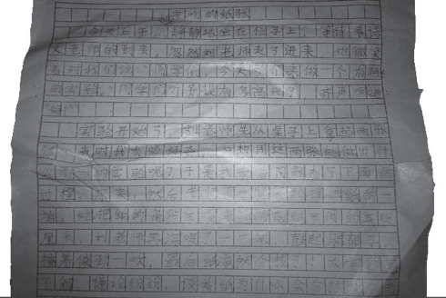

“亲吻的纸张”，什么意思？（修订版）
黑狼语录：
- 留住时间，保存记忆。
小豆包写作文，唔得很严实，不让任何人看。我好不容易逮个机会，用相机拍了下来，过程跟间谍似的，终于弄到了稿子，确实是第一手的稿子，里面错字、病句非常的多。尽量保持原样，不做更改。
昨天帮小孩找东西，居然又找到了两份《亲吻的纸张》，而且还都有变化，也不知哪个是最后的版本，干脆都修订上来吧。修订后的内容用不同颜色突出显示。两个版本变化较大，其中蓝色为最初版本，红色为另一个版本。看着有点乱，哈哈。
亲吻的纸张
今天上午上课了，我们静静地坐在位子上，等待着语文老师的到来。忽然刘老师走了进来，她微笑着对我们说：“同学们，今天咱们来做一个有趣的实验。”同学们听别提有多高兴了，齐声喊道大家很期待，高声喊道：“好！”
实验开始了，刘老师先从桌子上拿起两张纸，当时我有些好奇，心想用这两张能做出什么有趣的实验呢？于是我带着问题看了下面的过程。原来，然后老师用手紧紧地捏住纸的一端，她刘老师把纸的角贴住嘴角，两张纸中间约三四厘米，刘老师再深吸了一口气，鼓起腮帮子，接着使劲一吹，最后纸竟然合拢了！大家疑惑不解，议（本处一个错别字）论纷纷，谈着纸为什么会合拢呢？老师大声地问：“大家想不想知道两张纸为什么会合拢的原因呢？”同学们也大声回答到：“好！”于是刘老师耐心的说：“因为，吹气时中间气流加快，纸条内侧气压减少，两边气压增大，造成里外压差，外侧向内挤压，两纸合拢。”有的同学脸上露出一丝得意的笑容，还有的同学显然有点失落，还过大家还是怀着期待的心情照着老师的方法自己做了一遍实试，结果还是和老师的一样，但同学们依然很快乐 课堂上充满了欢乐的气息和笑声。大家听了恍然大悟，有的同学已经拿着自己桌子上的纸开始做实验了。教室里充满了快乐的气息和笑声，铃，铃，铃，下课铃响了，大家拿着自己的东西依依不舍的离开了欢乐的课堂，都希望有时间还能来上这样的课。回到了自己的教室。大家谈论着这篇作业的题为什么会是亲吻的纸张呢？原来当吹的时候，纸会合拢，于是就叫它“亲吻的纸张”。
这节课不仅让我们快乐了，也让我们学到了很多知识。通过这次实验，我学到了知识很广fan，我们赶快学习，比如这个实检，我们大家还不知道原理呢。
（附上偷拍的剪裁图片）
